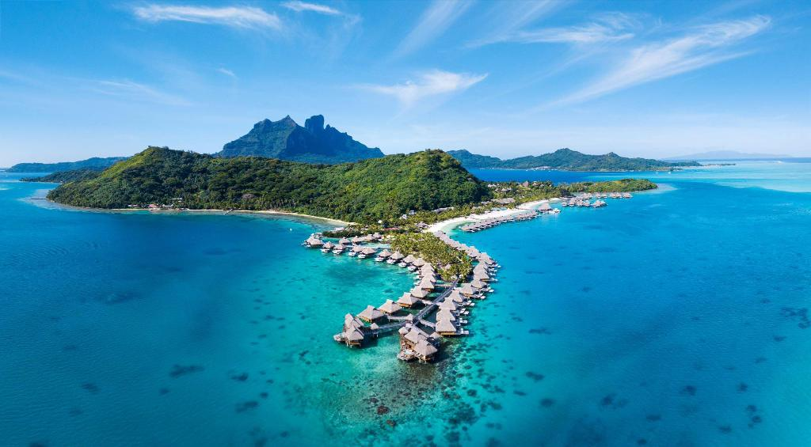
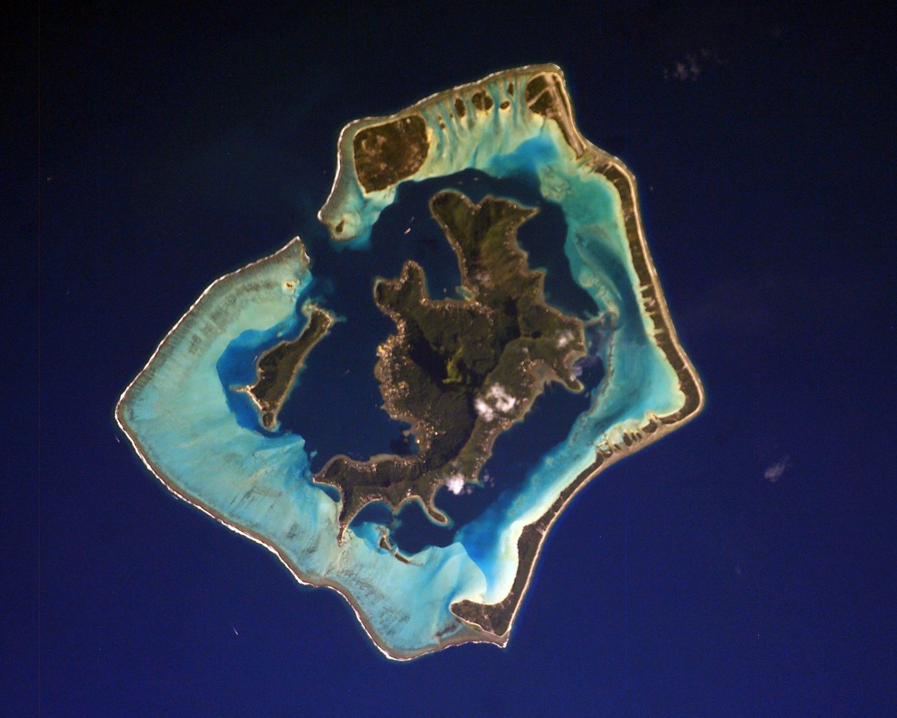

|
Bora Bora is an island group in the Leeward Islands. The Leeward Islands comprise the western part of the Society Islands of French Polynesia, which is an overseas collectivity of the French Republic in the Pacific Ocean. Bora Bora has a total land area of 30.55 km2. The main island, located about 230 kilometres northwest of Papeete, is surrounded by a lagoon and a barrier reef. In the center of the island are the remnants of an extinct volcano, rising to two peaks, Mount Pahia and Mount Otemanu; the highest point is at 727 metres. Bora Bora is part of the Commune of Bora-Bora, which also includes the atoll of Tūpai. The languages spoken in Bora Bora are Tahitian and French. However, due to the high tourism population, many natives of Bora Bora have learned to speak English. Bora Bora is a major international tourist destination, famous for its seaside luxury resorts. The major settlement, Vaitape, is on the western side of the main island, opposite the main channel leading into the lagoon. Produce of the island is mostly limited to what can be obtained from the sea and from the plentiful coconut trees, which were historically of economic importance for the production of copra. |
 |
|
Bora-Bora is part of a group of volcanic islands linked to the activity of a hazardous area.
It is an extinct volcano, which was active in the Upper Pliocene,
and then underwent at least partial depression and strong erosion under a hot and humid tropical climate.
|
 |